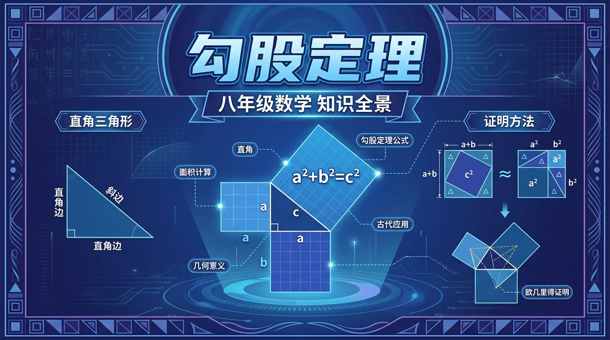
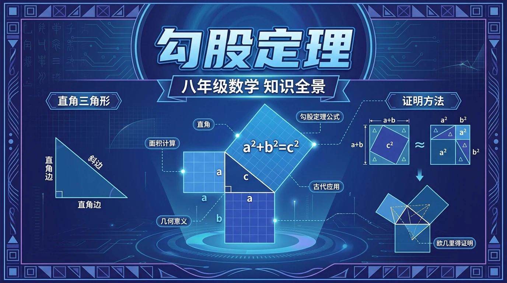

探索直角三角形三边之间的神奇关系

❓ 为啥斜边非得叫'斜边'？不能叫长边吗？
❓ 这个定理买菜能打折吗？
❓ 如果三角形长得歪一点，这定理还管用吗？
学完这一课，这些问题你都能自信地回答。
🎯 能说出直角三角形三边名称及关系式
🎯 能判断给定三边长度是否满足勾股定理
🎯 能计算直角三角形任意一边的未知长度
1. 直角三角形中，斜边是哪条边？
2. 已知一个等腰直角三角形，两直角边均为3，则斜边约为？
3. 勾股定理是谁发现的？（选最完整的说法）
And（背景）：我们已经学习了直角三角形的基本性质，知道它有一个90°的角。
But（冲突）：但如果我告诉你，直角三角形三条边的长度之间存在一个绝妙的数量关系，你能猜到是什么吗？
Therefore（行动）：让我们通过面积拼合动画来亲眼目睹这个几千年前的伟大发现！
以直角三角形三边为边长的正方形面积关系演示
我们知道公式了，但这个公式背后有多深的内涵？让我们从多个角度来看。
满足 a²+b²=c² 的整数组叫"勾股数"
经典组合：3,4,5 | 5,12,13 | 8,15,17
验证：3²+4²=9+16=25=5² ✓
如果三角形三边满足 a²+b²=c²，则该三角形是直角三角形
应用：工地用3-4-5验证直角
中国《周髀算经》："勾三股四弦五"
比毕达哥拉斯早500年
建筑测量、GPS定位、勾股树分形、相对论时空间隔
无处不在的数学真理
💪 即时练习：已知直角三角形两直角边为 6 和 8，斜边为？
公式记住了，But 面对实际问题时如何建立模型？Therefore 我们需要练习"画图→标边→套公式"三步法。
📝 例题：一根梯子长 10m，靠墙放置，梯脚距墙 6m，梯顶距地面高度是多少？
设梯顶高度为 h
由勾股定理：h² + 6² = 10²
h² = 100 - 36 = 64
h = 8（m）
💪 即时练习：矩形的对角线长为13，一边长为5，另一边长为？
小明从家出发，向东走了 24m，再向北走了 7m 到达学校。请问小明家到学校的直线距离是多少？
🔑 答案确认：小明家到学校的直线距离是多少？
1. 直角三角形中，若斜边为 c，两直角边为 a、b，则正确的是？
2. 三角形三边长分别为 5、12、13，判断这是什么三角形？
3. 等腰直角三角形，直角边长为 a，斜边长为？
4. 正方形的对角线长为 10，则边长为？
5. 以下哪组数不是勾股数？
探索 300 多种勾股定理的证明方法，包括总统证明法
如何生成所有勾股数？探索欧几里得公式
《周髀算经》中的"数之法，出于圆方"
GPS、相对论中的时空间隔公式与勾股定理的联系
📐 TeachAny | 勾股定理 · 八年级数学
["错因1：混淆勾股定理适用条件，误用于非直角三角形。需强调'直角'前提", '误区2：认为所有满足a+b>c的三边都能构成直角三角形。实际上必须严格满足a²+b²=c²', '诊断3：计算时忽略单位统一，如混合使用cm和m。建议解题前先统一单位']
• 设计任务：为学校花园规划直角形花坛，仅提供卷尺和木桩，请写出具体操作步骤
• 探究问题：当三角形变为锐角或钝角时，三边平方和关系会发生什么变化？试举例说明
• 迁移应用：解释斜拉桥的钢索长度如何利用勾股定理进行工程计算
先独立作答，再点选项查看对错与错因。
直角三角形两直角边分别为5cm和12cm，斜边长度是
下列哪组数不能构成直角三角形边长
等腰直角三角形斜边为10cm，直角边长是
直角三角形中，若一条直角边是____，另一条是15，斜边是17
答案：8
根据勾股定理：√(17²-15²)=8
梯子靠在墙上形成直角三角形，梯子长____米时，底端离墙3米，顶端可达4米高
答案：5
√(3²+4²)=5
关于勾股定理的正确表述是
利用勾股定理设计测量方案，不可直接攀爬测量
将定理拆解为'两直角边平方和'与'斜边平方'两部分
用拼图法展示a²+b²如何拼合成c²的面积
对比锐角/钝角三角形中三边平方关系差异
在校园旗杆测量中观察定理的实际应用
用定理推导坐标系中两点间距离公式
✅ 强调斜边必对直角
💡 概念混淆
✅ 用面积模型强化平方含义
💡 符号意识薄弱
✅ 建立勾股数必须满足等式的认知
💡 机械记忆导致错误迁移
口诀：勾三股四弦必五，两短平方和等长
类比：就像折叠梯子，两边撑开的距离决定梯子长度
直角三角形中，直角对的边叫？
下列哪组数可构成直角三角形？
（中考题）直角三角形两直角边为5cm和12cm，其斜边上的高为？
（迁移题）长方形对角线长10cm，宽6cm，则长为？
（生活题）小明离旗杆底部8米，仰视旗杆顶为10米，旗杆高？
And：学生已学过三角形边长关系
But：但不知道直角三角形三边的定量关系
Therefore：揭示直角三角形的隐藏规律
当三角形有个直角时，两直角边平方和等于斜边平方。比如：直角边3cm和4cm，斜边就是5cm，因为3²+4²=5²（9+16=25）。这个规律对所有直角三角形都成立，就像数学界的指纹密码。
🌍 工人师傅用3米、4米的木条固定墙角，直接量出对角线5米就能确认角度是直角，比用角尺更方便。
直角边为6cm和8cm，斜边是？
And：已掌握已知直角边求斜边
But：遇到已知斜边和一条边时不会反推
Therefore：培养逆向运用公式的能力
就像知道密码总和也能倒推缺的数字。例如：斜边13cm，一条直角边5cm，另一条边就是√(13²-5²)=√(169-25)=12cm。注意：先确认最长边是斜边！就像玩数学拼图，缺哪块就补哪块。
🌍 装修时知道电视柜对角线1.7米，深度0.8米，就能算出墙面至少留1.5米宽度（√(1.7²-0.8²)≈1.5）。
斜边25cm，直角边7cm，求另一边
And：会计算单一三角形
But：遇到组合图形就无从下手
Therefore：训练复杂问题拆解能力
复杂图形就像乐高积木，要拆成多个直角三角形。比如：梯形高12cm，上底9cm，下底16cm，可以分成矩形和直角三角形。斜腰长度=√[(16-9)²+12²]=√(49+144)=√193≈13.9cm。关键要画辅助线暴露隐藏的直角三角形。
🌍 测量操场跑道拐弯处的距离，可以拆解成多个直道+圆弧直角三角形组合计算。
长方形长8宽6，对角线与长边夹角的正弦值是？
And：会纸上计算
But：不会解决实际问题
Therefore：建立数学与现实桥梁
比如测量旗杆：站离杆底5米，测杆顶仰角45°，此时眼睛到杆顶的斜边=√(5²+5²)≈7.07米。若身高1.6米，旗杆≈1.6+5=6.6米（等腰直角三角形两直角边相等）。要特别注意建立正确的数学模型，把实际问题转化成直角三角形问题。
🌍 台风天判断树木是否会砸到房子：测量树高（投影法）和树房距离，用勾股定理计算倒伏范围。
电线杆拉线锚点距杆底3米，拉线长5米，求固定点高度
